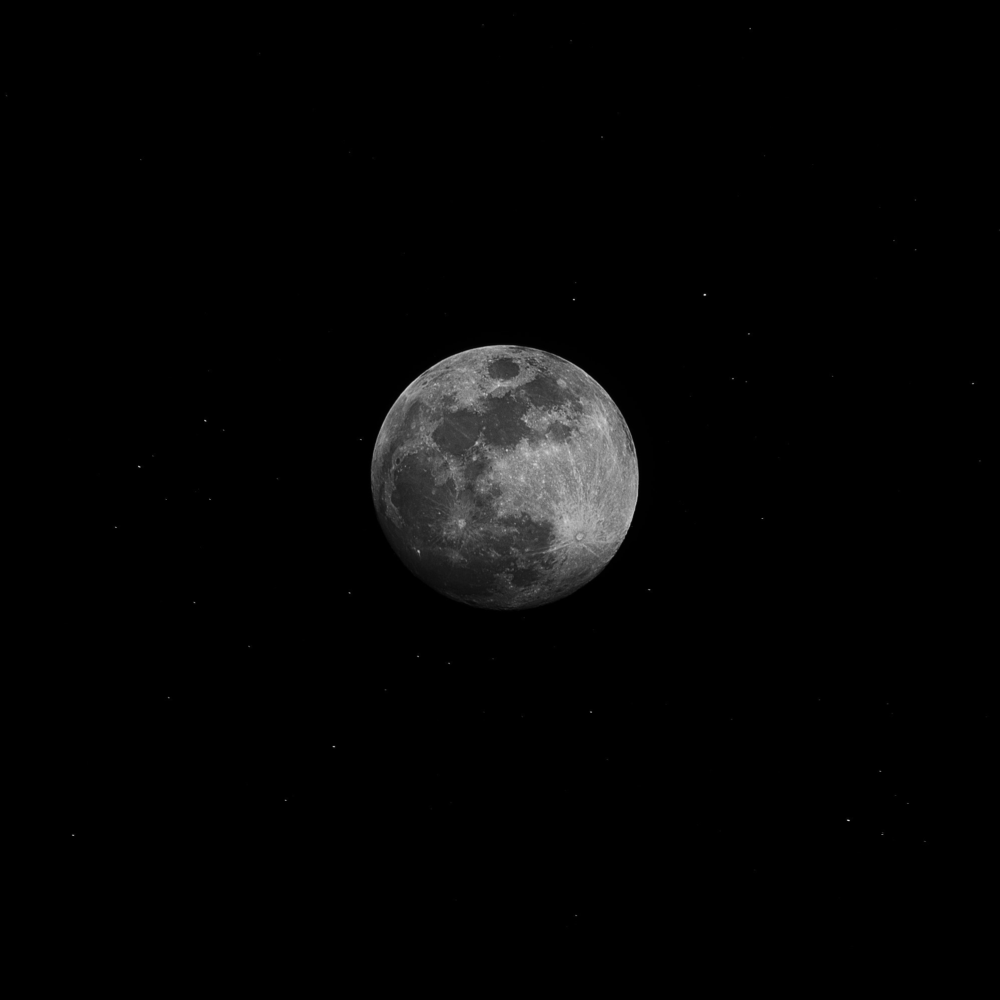

Des photos


Luv Resval propose son tout 1er album studio en ce vendredi 4 juin. Un opus très attendu par les fans… L’heure de vérité est arrivée pour Luv Resval. Originaire de l’Essonne, l’artiste figurait dans nos 10 rappeurs à suivre en 2021. Encore très jeune malgré le fait qu’il soit une personnalité bien identifiée du public rap. Un opus intitulé Etoile Noire – plus précisément Etoile Noire : Brise-Monde pour la version digitale et Etoile Noire : Nébuleuse pour la version physique – qui comporte 19 morceaux, et ce alors que la version Nébuleuse compte quant à elle 7 titres bonus.